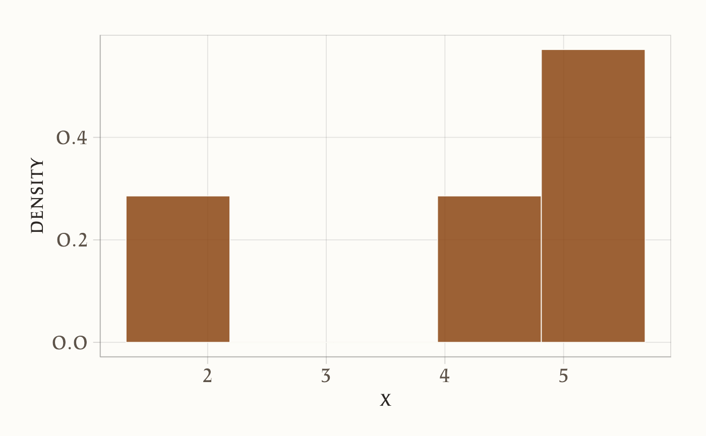
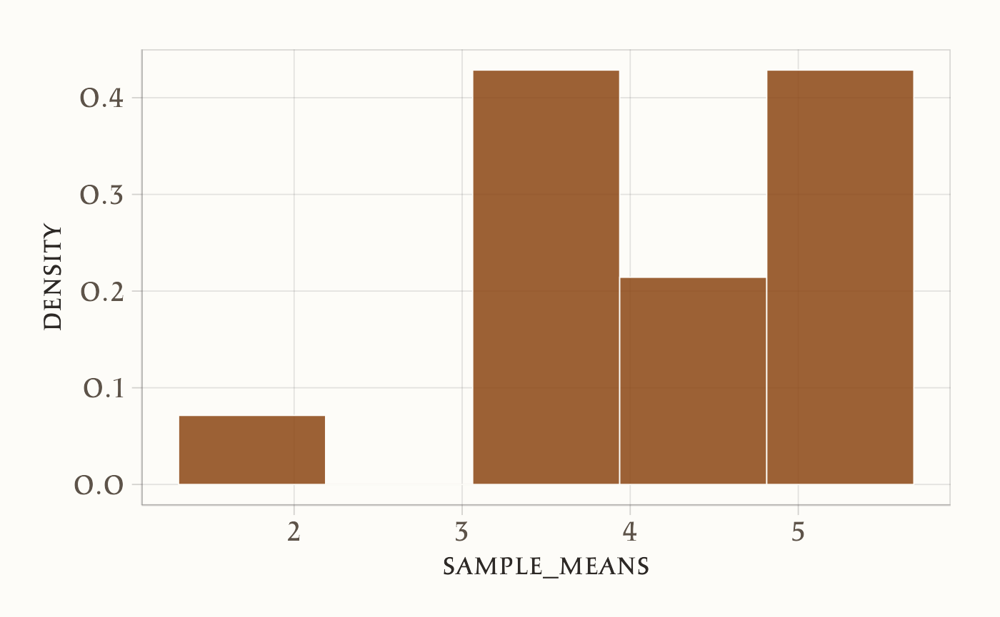
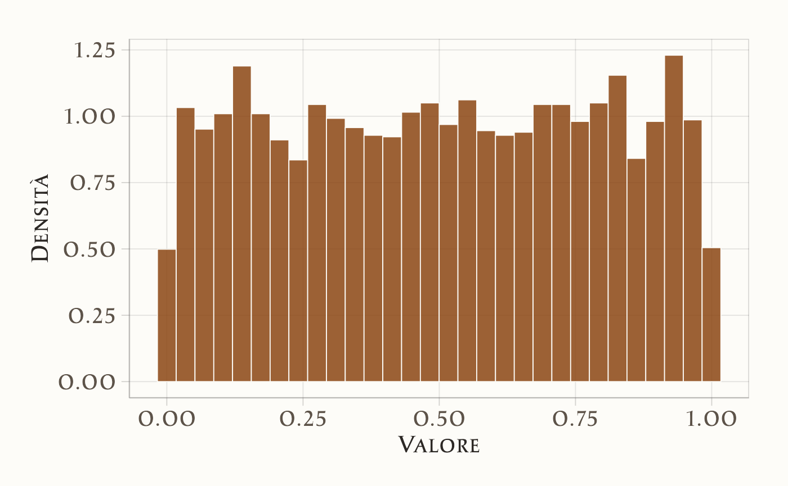
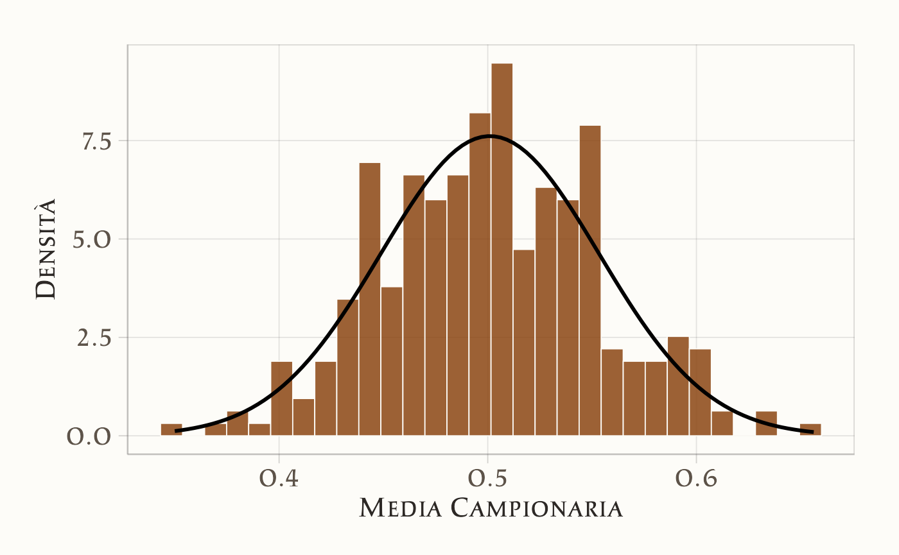

10 Stime, stimatori e parametri
“Lo scopo della statistica inferenziale è trarre conclusioni su una popolazione utilizzando le informazioni contenute in un campione. Lo stimatore è il nostro strumento formale per compiere questa induzione.”
– Sir David Cox Principles of Statistical Inference (2006)
Introduzione
In psicologia – come in molte altre discipline – ci si trova spesso nella situazione di voler comprendere una particolare caratteristica di un’intera popolazione. Tuttavia, difficilmente è possibile raccogliere dati da tutti i membri di tale popolazione, a causa di limiti di tempo, risorse o accessibilità. Ad esempio, potremmo voler stimare la percentuale di persone che soffrono di un determinato disturbo d’ansia oppure la media di un punteggio di memoria a breve termine, ma non siamo in grado di testare ogni singolo individuo appartenente al gruppo di interesse. Per far fronte a questo limite, si sceglie di selezionare un campione di partecipanti (idealmente in modo casuale), dal quale si ricavano le informazioni utili a inferire la caratteristica dell’intera popolazione, riconoscendo un certo grado di incertezza.
Nel linguaggio statistico:
- Popolazione: l’insieme completo degli individui (o unità) di interesse. Esempi: tutte le persone che soddisfano certi criteri diagnostici, tutti gli studenti di una scuola, tutte le misurazioni di reazione a uno stimolo sperimentale.
- Parametro: la quantità (sconosciuta) che descrive la caratteristica d’interesse nella popolazione (esempio: la “vera” proporzione di soggetti con un certo disturbo, oppure la “vera” media di un test cognitivo).
- Campione: un sottoinsieme di individui (idealmente estratto in modo casuale) dalla popolazione di interesse.
- Stima: il valore numerico, calcolato sul campione, che approssima il parametro.
- Stimatore: la regola o funzione matematica con cui, a partire dai dati del campione, si ottiene la stima.
Come esempio, immaginiamo di voler conoscere la proporzione di adulti che manifestano un certo sintomo d’ansia, indicandola con \(p\). Poiché non possiamo (o non vogliamo) esaminare tutta la popolazione, estraiamo un campione casuale di \(N\) individui, verifichiamo quanti di loro presentino il sintomo e calcoliamo:
\[ \hat{p} = \frac{\text{numero di individui con il sintomo}}{N}. \]
Questo rapporto (detto stima campionaria di \(p\)) difficilmente coinciderà esattamente con \(p\), ma la teoria probabilistica mostra che, in assenza di distorsioni sistematiche, \(\hat{p}\) tenderà ad avvicinarsi al valore reale al crescere della dimensione del campione.
Panoramica del capitolo
- Come le stime dei parametri della popolazione variano da campione a campione.
- Nozioni di popolazione, campione, parametro, stima e stimatore.
- Connessione tra stime campionarie e parametri reali della popolazione.
- Calcolare e interpretare il valore atteso e la varianza della media campionaria.
- Utilizzare l’errore standard per rappresentare l’incertezza nelle stime dei parametri.
- La convergenza delle medie campionarie alla media della popolazione.
- Il teorema per approssimare distribuzioni campionarie con distribuzioni normali.
10.1 Popolazione e campione
Per rendere tutto più concreto, supponiamo di voler stimare la frequenza di un sintomo ansioso in un’ampia popolazione, ad esempio l’insieme di tutti gli studenti universitari di un paese. Non potendo sottoporre un questionario a ogni studente, scegliamo un sottoinsieme di individui in modo casuale (cioè il nostro campione) e a ciascuno somministriamo uno strumento standardizzato volto a rilevare la presenza/assenza del sintomo. Il nostro obiettivo finale è utilizzare i dati campionari per trarre inferenze sulla popolazione complessiva, cioè per stimare la vera proporzione \(p\) di studenti che manifestano il sintomo.
Questa operazione di estrarre un sottogruppo rappresentativo si chiama campionamento. La proporzione di individui con il sintomo d’ansia calcolata nel campione è la nostra stima campionaria (simbolizzata con \(\bar{X}\) o, più spesso in contesto di proporzioni, con \(\hat{p}\)). Se il campione è selezionato in modo corretto e rappresentativo, ci aspettiamo che \(\bar{X}\) rispecchi, con un certo margine di errore, il vero valore di \(p\) (il parametro).
10.1.1 Lo stimatore: la proporzione campionaria
Per formalizzare ulteriormente, consideriamo un modello “urna” in cui la popolazione è immaginata come un’urna piena di “biglie” di due colori (ad esempio, “blu” per sintomo presente, “rosso” per sintomo assente). Estraendo a caso \(N\) biglie (cioè selezionando \(N\) soggetti), definiamo la variabile casuale \(X_i\) come:
\[ X_i = \begin{cases} 1 & \text{se l’individuo } i \text{ presenta il sintomo (biglia blu),}\\ 0 & \text{se l’individuo } i \text{ non presenta il sintomo (biglia rossa).} \end{cases} \]
La proporzione campionaria – ossia la nostra stima empirica di \(p\) – è data da:
\[ \bar{X} \;=\; \frac{1}{N}\sum_{i=1}^N X_i. \]
Dal punto di vista interpretativo:
- \(p\) è la vera proporzione di studenti (biglie “blu”) nella popolazione;
- \(\bar{X}\) è la proporzione di studenti con il sintomo riscontrata nel campione.
10.2 Distribuzione campionaria: valore atteso e varianza
Il passo cruciale per il ragionamento inferenziale è capire come varia \(\bar{X}\) se ripetiamo la procedura di campionamento molte volte. In altre parole, se estraessimo più volte (indipendentemente) un campione di ampiezza \(N\), otterremmo ogni volta un valore di \(\bar{X}\) in genere diverso. La collezione di tutti questi possibili valori (con le rispettive probabilità) si chiama distribuzione campionaria di \(\bar{X}\).
10.2.1 Valore atteso della media (o proporzione) campionaria
Se \(X_1, X_2, \dots, X_n\) sono variabili aleatorie indipendenti e identicamente distribuite (i.i.d.), ognuna con valore atteso \(\mathbb{E}[X_i] = \mu\), allora la loro media campionaria
\[ \bar{X} \;=\; \frac{1}{n}\sum_{i=1}^n X_i \]
possiede a sua volta valore atteso
\[ \mathbb{E}[\bar{X}] \;=\; \mu. \]
Questa semplice formula rivela che \(\bar{X}\) è uno stimatore non distorto per \(\mu\): in media, se ripetessimo infinite volte lo stesso tipo di campionamento, otterremmo una stima che coincide con il vero valore del parametro. Nel caso di variabili 0-1 (come presenza/assenza di sintomo), abbiamo \(\mu \equiv p\).
Dimostrazione. Consideriamo un campione casuale \(X_1, X_2, \dots, X_n\) di variabili aleatorie indipendenti e identicamente distribuite (i.i.d.), ognuna con valore atteso \(\mathbb{E}[X_i] = \mu\). Vogliamo dimostrare che il valore atteso della media campionaria \(\bar{X}\) è uguale a \(\mu\):
\[ \mathbb{E}[\bar{X}] = \mu. \]
Passo 1: Definizione di media campionaria.
La media campionaria è definita come:
\[
\bar{X} = \frac{1}{n} \sum_{i=1}^n X_i.
\]
Passo 2: Applicazione del valore atteso.
Calcoliamo il valore atteso di \(\bar{X}\), sfruttando la linearità del valore atteso (l’aspettativa di una somma è la somma delle aspettative):
\[
\mathbb{E}[\bar{X}] = \mathbb{E}\left[\frac{1}{n} \sum_{i=1}^n X_i\right].
\]
Passo 3: Portare fuori le costanti.
Il fattore \(\frac{1}{n}\) è una costante rispetto all’operatore \(\mathbb{E}\):
\[
\mathbb{E}[\bar{X}] = \frac{1}{n} \mathbb{E}\left[\sum_{i=1}^n X_i\right].
\]
Passo 4: Separare la somma.
Per linearità, l’aspettativa della somma è la somma delle aspettative:
\[
\mathbb{E}\left[\sum_{i=1}^n X_i\right] = \sum_{i=1}^n \mathbb{E}[X_i].
\]
Passo 5: Sfruttare l’identica distribuzione.
Poiché tutte le \(X_i\) sono identicamente distribuite, \(\mathbb{E}[X_i] = \mu\) per ogni \(i\):
\[
\sum_{i=1}^n \mathbb{E}[X_i] = \sum_{i=1}^n \mu = n\mu.
\]
Passo 6: Combinare i risultati.
Sostituendo nel Passo 3:
\[
\mathbb{E}[\bar{X}] = \frac{1}{n} \cdot n\mu = \mu.
\]
Interpretazione e Significato.
-
Non distorsione (Unbiasedness):
La dimostrazione mostra che \(\bar{X}\) è uno stimatore non distorto di \(\mu\). Questo significa che, in media su infinite replicazioni del campionamento, \(\bar{X}\) coincide con il vero valore \(\mu\).
-
Indipendenza non necessaria per l’aspettativa:
L’indipendenza tra le \(X_i\) non è richiesta per questa dimostrazione. Bastano l’identica distribuzione (per garantire \(\mathbb{E}[X_i] = \mu\)) e la linearità del valore atteso.
-
Caso speciale: proporzione campionaria
Se le \(X_i\) sono variabili di Bernoulli (0-1) con \(\mathbb{E}[X_i] = p\), allora \(\bar{X} = \frac{\text{numero di successi}}{n}\) stima la proporzione \(p\), e \(\mathbb{E}[\bar{X}] = p\).
Perché è importante?
Questa proprietà è alla base dell’inferenza statistica:
- Giustifica l’uso della media campionaria come stima affidabile di \(\mu\).
- È il fondamento della Legge dei Grandi Numeri: all’aumentare di \(n\), \(\bar{X}\) converge a \(\mu\).
10.2.2 Varianza della media (o proporzione) campionaria
Oltre al valore atteso, un’altra misura fondamentale è la varianza della distribuzione campionaria, che quantifica quanto \(\bar{X}\) tenda a fluttuare attorno a \(\mu\). Se la varianza individuale di ciascun \(X_i\) è \(\sigma^2\), allora per la media campionaria si ha:
\[ \mathrm{Var}(\bar{X}) \;=\; \frac{\sigma^2}{n}. \tag{10.1}\]
Nel caso Bernoulliano (variabili 0-1) con \(\mathbb{E}[X_i] = p\), sappiamo che
\[ \sigma^2 \;=\; p(1-p). \]
Pertanto:
\[ \mathrm{Var}(\bar{X}) \;=\; \frac{p \bigl(1-p\bigr)}{n}. \]
La radice quadrata di questa varianza prende il nome di errore standard (in inglese Standard Error, SE) della media (o della proporzione), e risulta:
\[ \mathrm{SE}(\bar{X}) \;=\; \sqrt{\frac{p\,(1-p)}{n}}. \]
Con l’aumentare di \(n\), la varianza di \(\bar{X}\) diminuisce, e quindi la nostra stima diventa più “precisa” (in un senso statistico). Ciò spiega perché, anche nella pratica psicologica, aumentare la dimensione del campione riduce l’incertezza nella stima e migliora l’affidabilità dei risultati.
Osservazione: nella ricerca psicologica, l’errore standard fornisce un’indicazione chiara di quanto, in media, la nostra stima potrebbe deviare dal vero parametro, se ripetessimo il campionamento molte volte. Questo concetto è centrale in molte procedure inferenziali, come la costruzione di intervalli di confidenza o il test di ipotesi, e prepara il terreno per comprendere la cosiddetta distribuzione campionaria della media (argomento che il capitolo proseguirà a trattare).
Dimostrazione. Forniamo qui la dimostrazione dell’Equazione 10.1. Assumiamo che \(X_1, X_2, \dots, X_n\) siano variabili casuali indipendenti e identicamente distribuite (i.i.d.) con media \(\mu\) e varianza \(\sigma^2\). Definiamo la media campionaria
\[ \bar{X} \;=\; \frac{1}{n}\sum_{i=1}^n X_i. \]
Vogliamo calcolare \(\mathrm{Var}(\bar{X})\). Per prima cosa, notiamo che:
\[ \mathrm{Var}(a\,Y) \;=\; a^2 \,\mathrm{Var}(Y) \]
per qualunque costante \(a\). Nel nostro caso, poniamo \(a = \frac{1}{n}\) e \(Y = \sum_{i=1}^n X_i\). Otteniamo quindi:
\[ \mathrm{Var}(\bar{X}) \;=\; \mathrm{Var}\!\Bigl(\tfrac{1}{n}\sum_{i=1}^n X_i\Bigr) \;=\; \frac{1}{n^2} \, \mathrm{Var}\!\Bigl(\sum_{i=1}^n X_i\Bigr). \]
Ora sfruttiamo il fatto che \(X_1, X_2, \dots, X_n\) siano indipendenti. In tal caso, la varianza della somma è la somma delle varianze:
\[ \mathrm{Var}\Bigl(\sum_{i=1}^n X_i\Bigr) \;=\; \sum_{i=1}^n \mathrm{Var}(X_i) \;=\; n \,\sigma^2, \]
poiché \(\mathrm{Var}(X_i) = \sigma^2\) per tutti gli \(i\). Combiniamo dunque i due risultati:
\[ \mathrm{Var}(\bar{X}) \;=\; \frac{1}{n^2}\,\bigl(n \,\sigma^2\bigr) \;=\; \frac{\sigma^2}{n}. \]
In sintesi, la chiave della dimostrazione sta nel fattore \(\tfrac{1}{n^2}\) e nel fatto che, per variabili indipendenti, la varianza di una somma è la somma delle varianze. Questo ci consente di concludere che la varianza della media campionaria è \(\tfrac{\sigma^2}{n}\).
Questo risultato riflette un’importante proprietà statistica:
- all’aumentare di \(n\), la varianza della media campionaria diminuisce, rendendo la media campionaria una stima più precisa del valore atteso \(\mu\). La riduzione della varianza è proporzionale a \(1/n\), quindi raddoppiare il campione riduce la varianza della media campionaria di un fattore 2.
In conclusione, la formula \(\text{Var}(\bar{X}) = \frac{\sigma^2}{n}\) mostra che la precisione della media campionaria aumenta con la dimensione del campione, poiché la varianza diminuisce. Questo principio è alla base dell’importanza di campioni più grandi nella stima statistica.
10.3 La distribuzione campionaria della media
Per illustrare ulteriormente il concetto di distribuzione campionaria, consideriamo un caso semplice e specifico: una popolazione finita di dimensioni ridotte. Sebbene stiamo esaminando un caso particolare, è fondamentale notare che le proprietà e i principi che analizzeremo in questo contesto sono perfettamente applicabili a popolazioni di qualsiasi dimensione.
La distribuzione campionaria ci dà una visione della variazione che potremmo aspettarci nelle stime derivate da diversi campioni estratti dalla stessa popolazione. Ogni volta che preleviamo un campione, otteniamo una stima diversa per il parametro di interesse (come la media). La distribuzione campionaria ci mostra come queste stime sono distribuite e ci aiuta a comprendere quanto siano affidabili.
In termini pratici, se vogliamo calcolare la media della popolazione, non possiamo farlo direttamente (a meno di non avere accesso all’intera popolazione). Invece, possiamo estrarre un campione casuale e calcolare la media del campione come stima di \(\mu\). Tuttavia, un altro campione fornirà una stima leggermente diversa. La distribuzione campionaria ci aiuta a capire quanto queste stime varino da campione a campione e ci fornisce un quadro completo dell’incertezza legata al processo di stima.
Nella simulazione seguente, ipotizziamo la seguente popolazione:
x <- c(2, 4.5, 5, 5.5)
x
#> [1] 2.0 4.5 5.0 5.5L’istogramma seguente descrive la distribuzione della popolazione.
ggplot(data.frame(x = x), aes(x)) +
geom_histogram(
bins = 5,
aes(y = after_stat(density))
)
Calcoliamo la media e la varianza della popolazione. Media:
mean_x <- mean(x) # Media della popolazione
mean_x
#> [1] 4.25Varianza:
Consideriamo tutti i possibili campioni di dimensione \(n = 2\) che possono essere estratti dalla popolazione rappresentata dal vettore x. Per generare questi campioni, utilizziamo la funzione expand.grid in R, che consente di creare tutte le combinazioni possibili di valori, includendo le ripetizioni.
Il risultato sarà un data frame con 16 righe e 2 colonne, dove ogni riga rappresenta una coppia possibile di valori estratti dal vettore x. Questo risultato è in linea con il principio del calcolo combinatorio: quando selezioniamo \(n\) elementi da un insieme di \(k\) elementi e permettiamo ripetizioni, il numero totale di combinazioni è dato da \(k^n\). Nel nostro caso, con \(k = 4\) e \(n = 2\), otteniamo:
\[ 4^2 = 16 \text{ combinazioni}. \]
Utilizzando expand.grid, possiamo verificare questo risultato in R:
# Generazione delle combinazioni con ripetizione
samples <- expand.grid(x, x)
# Visualizzazione del risultato
print(samples)
#> Var1 Var2
#> 1 2.0 2.0
#> 2 4.5 2.0
#> 3 5.0 2.0
#> 4 5.5 2.0
#> 5 2.0 4.5
#> 6 4.5 4.5
#> 7 5.0 4.5
#> 8 5.5 4.5
#> 9 2.0 5.0
#> 10 4.5 5.0
#> 11 5.0 5.0
#> 12 5.5 5.0
#> 13 2.0 5.5
#> 14 4.5 5.5
#> 15 5.0 5.5
#> 16 5.5 5.5Il data frame risultante mostrerà tutte le possibili coppie \((x_1, x_2)\), dove \(x_1\) e \(x_2\) possono essere scelti indipendentemente dalla popolazione \(x = \{2, 4.5, 5, 5.5\}\).
Per calcolare la media di ogni campione di ampiezza \(n = 2\), possiamo utilizzare la funzione rowMeans, che calcola la media per ogni riga di una matrice. In questo modo, otteniamo un vettore contenente la media di ciascuna coppia di valori. Questo insieme di valori costituisce la distribuzione campionaria delle medie dei campioni di ampiezza \(n = 2\) che possono essere estratti dalla popolazione x.
Una rappresentazione grafica della distribuzione campionaria delle medie dei campioni di ampiezza \(n = 2\) che possono essere estratti dalla popolazione x è fornita qui sotto.
# Istogramma delle medie campionarie
ggplot(data.frame(sample_means), aes(x = sample_means)) +
geom_histogram(
bins = 5,
aes(y = after_stat(density))
)
Mostriamo qui nuovamente la lista di tutti i possibili campioni di ampiezza 2 insieme alla media di ciascun campione.
# Creare un data frame con i campioni e le loro medie
df <- data.frame(
Samples = apply(samples, 1, paste, collapse = ", "),
x_bar = rowMeans(samples)
)
print(df)
#> Samples x_bar
#> 1 2, 2 2.00
#> 2 4.5, 2 3.25
#> 3 5, 2 3.50
#> 4 5.5, 2 3.75
#> 5 2, 4.5 3.25
#> 6 4.5, 4.5 4.50
#> 7 5, 4.5 4.75
#> 8 5.5, 4.5 5.00
#> 9 2, 5 3.50
#> 10 4.5, 5 4.75
#> 11 5, 5 5.00
#> 12 5.5, 5 5.25
#> 13 2, 5.5 3.75
#> 14 4.5, 5.5 5.00
#> 15 5, 5.5 5.25
#> 16 5.5, 5.5 5.50Procediamo ora al calcolo della media della distribuzione campionaria delle medie di campioni di ampiezza \(n = 2\) che possono essere estratti dalla popolazione x.
# Calcolare la media delle medie campionarie
mean(sample_means)
#> [1] 4.25Si noti che questo valore coincide con la media della popolazione.
La varianza delle medie campionarie, calcolata empiricamente, può essere ottenuta direttamente dai dati utilizzando la seguente formula:
Questo calcolo riflette la formula teorica per la varianza della media campionaria, definita come la varianza dei dati divisa per la dimensione del campione \(n\). Tuttavia, poiché la funzione var() in R utilizza \(n-1\) al denominatore per fornire una stima non distorta della varianza della popolazione, è necessario applicare un fattore di correzione \(\frac{n-1}{n}\) per ottenere la varianza campionaria corretta. Successivamente, questa varianza viene divisa per \(n\) per ottenere la varianza della media campionaria.
In alternativa, possiamo calcolare lo stesso valore prendendo la varianza delle medie di tutti i campioni (16 in questo caso):
Anche in questo caso applichiamo il fattore di correzione \(\frac{n-1}{n}\) per ottenere il calcolo corretto della varianza usando la funzione var() in R.
Entrambi i calcoli forniscono risultati coerenti con la teoria, dimostrando che la varianza delle medie campionarie è inferiore a quella della popolazione.
10.4 Legge dei Grandi Numeri
La Legge dei Grandi Numeri (LLN, dall’inglese Law of Large Numbers) è uno dei pilastri fondamentali della teoria della probabilità. Essa descrive come, all’aumentare del numero di osservazioni, la media campionaria si avvicini stabilmente al valore atteso teorico. In termini formali, se \(\bar{X}_n\) rappresenta la media di \(n\) osservazioni indipendenti e identicamente distribuite (i.i.d.) con valore atteso \(\mu\), allora \(\bar{X}_n \to \mu\) quando \(n \to \infty\). Questo principio è cruciale per comprendere la relazione tra dati empirici e modelli teorici, come discusso nella sezione sull’interpretazione della probabilità (Capitolo 2).
Esistono due versioni principali della Legge dei Grandi Numeri:
Legge Forte: La media campionaria \(\bar{X}_n\) converge quasi certamente a \(\mu\), il che significa che, con probabilità 1, la media osservata si avvicina indefinitamente al valore teorico al crescere di \(n\).
-
Legge Debole: La media campionaria \(\bar{X}_n\) converge a \(\mu\) in probabilità, ovvero, per ogni \(\varepsilon > 0\), la probabilità che la differenza tra \(\bar{X}_n\) e \(\mu\) superi \(\varepsilon\) tende a zero al crescere di \(n\). Formalmente:
\[ \Pr\bigl(| \bar{X}_n - \mu| > \varepsilon\bigr) \to 0 \quad \text{al crescere di }n. \]
10.4.1 Applicazioni in psicologia
In psicologia, la Legge dei Grandi Numeri ha implicazioni significative. Ad esempio, se si vuole stimare con precisione la proporzione di individui che manifestano un determinato comportamento o la media di un test cognitivo in una popolazione, è necessario raccogliere un numero sufficiente di osservazioni. Solo con un campione ampio la media campionaria si avvicinerà alla media “vera” della popolazione, riducendo l’incertezza e migliorando l’affidabilità delle stime.
10.4.2 Forma debole della Legge dei Grandi Numeri
La forma debole della LGN, dimostrata per la prima volta da Jacob Bernoulli nel suo lavoro Ars Conjectandi, afferma che la media campionaria converge in probabilità alla media teorica (Hacking, 2006). In termini pratici, questo significa che, man mano che il numero di osservazioni aumenta, la probabilità che la differenza tra la media osservata e la media teorica superi un margine di errore \(\varepsilon\) diventa sempre più piccola. Formalmente:
\[ \lim_{{n \to \infty}} P\left(\left|\frac{1}{n} \sum_{i=1}^n X_i - \mu\right| \geq \varepsilon\right) = 0, \] dove:
- \(X_1, X_2, \ldots, X_n\) sono variabili casuali indipendenti e identicamente distribuite (i.i.d.),
- \(\mu\) è la media teorica,
- \(\varepsilon\) è un numero positivo arbitrariamente piccolo.
10.4.3 Forma forte della Legge dei Grandi Numeri
La forma forte della LGN, sviluppata successivamente da matematici come Kolmogorov, è un enunciato più potente. Essa stabilisce che la media campionaria converge quasi sicuramente alla media teorica. Questo implica che, con probabilità 1, la media osservata si avvicina indefinitamente al valore teorico man mano che il numero di prove tende all’infinito. Formalmente:
\[ P\left(\lim_{{n \to \infty}} \frac{1}{n} \sum_{i=1}^n X_i = \mu\right) = 1. \]
10.4.4 Importanza e critiche
La Legge dei Grandi Numeri è fondamentale per garantire la validità delle stime empiriche, ma la sua applicazione pratica richiede attenzione. Ad esempio, in psicologia, la raccolta di un numero sufficiente di osservazioni può essere costosa o difficile, specialmente quando si studiano fenomeni rari o popolazioni specifiche. Inoltre, l’assunzione di indipendenza e identica distribuzione delle osservazioni potrebbe non essere sempre realistica in contesti applicativi complessi. Nonostante queste sfide, la LGN rimane un principio essenziale per comprendere come i dati empirici possano avvicinarsi alle proprietà teoriche di una popolazione.
10.5 Teorema del Limite Centrale
Oltre alla convergenza, un ulteriore risultato importante è che la distribuzione di \(\bar{X}_n\) si approssima alla normale man mano che \(n\) cresce, anche se i singoli \(X_i\) non sono distribuiti normalmente.
Teorema 10.1 Se \(X_1, X_2, \ldots, X_n\) sono variabili iid con media \(\mu\) e deviazione standard \(\sigma\), la distribuzione di
\[ \bar{X}_n = \frac{1}{n}\sum_{i=1}^n X_i \] diventa approssimativamente normale con media \(\mu\) e deviazione standard \(\tfrac{\sigma}{\sqrt{n}}\) quando \(n\) è sufficientemente grande.
Per il caso 0-1 (presenza/assenza di un tratto), \(\bar{X}\) è quindi circa normale con media \(p\) e varianza \(\frac{p(1-p)}{n}\). Il TLC consente, tra l’altro, di costruire intervalli di confidenza e di calcolare probabilità che la stima si discosti di una certa quantità dal vero valore.
Esempio 10.1 Per visualizzare il Teorema del Limite Centrale (TLC) in azione, possiamo condurre una simulazione. Immaginiamo una popolazione distribuita in modo uniforme. Estraiamo 300 campioni di dimensione \(n = 30\) da questa popolazione e osserviamo come la distribuzione campionaria delle medie di questi campioni converga a una distribuzione normale. Questa simulazione fornirà un’illustrazione concreta dell’efficacia del TLC nell’approssimare distribuzioni reali.
# Impostiamo il seed per la riproducibilità dei risultati
set.seed(42)
# Generiamo una popolazione con distribuzione uniforme
population <- runif(5000, min = 0, max = 1)
# Passo 1: Visualizziamo l'istogramma della popolazione utilizzando ggplot2
ggplot(data.frame(population), aes(x = population)) +
geom_histogram(
aes(y = after_stat(density)),
bins = 30
) +
labs(x = "Valore", y = "Densità")
# Passo 2 e 3: Estraiamo campioni casuali e calcoliamo le medie campionarie
sample_size <- 30
num_samples <- 300
# Vettore vuoto per memorizzare le medie campionarie
sample_means <- c()
for (i in 1:num_samples) {
# Estraiamo un campione casuale
sample <- sample(population, size = sample_size, replace = TRUE)
# Calcoliamo la media del campione
sample_means[i] <- mean(sample)
}
# Calcoliamo media e varianza delle medie campionarie
x_bar <- mean(sample_means)
std <- sd(sample_means)
print('Media e Varianza delle Medie Campionarie')
#> [1] "Media e Varianza delle Medie Campionarie"
print(x_bar)
#> [1] 0.501
print(std^2)
#> [1] 0.00275# Passo 4: Visualizziamo l'istogramma delle medie campionarie utilizzando ggplot2
ggplot(data.frame(sample_means), aes(x = sample_means)) +
geom_histogram(
aes(y = after_stat(density)),
bins = 30
) +
stat_function(
fun = dnorm, args = list(mean = x_bar, sd = std), color = "black", size = 1
) +
labs(
x = "Media Campionaria", y = "Densità"
) +
theme(legend.position = "top") 
Spiegazione del codice e dei risultati
Popolazione: Abbiamo generato una popolazione di 5000 osservazioni distribuite uniformemente tra 0 e 1. La distribuzione uniforme è stata scelta perché è chiaramente non normale, il che rende più evidente l’effetto del TLC.
Campionamento: Abbiamo estratto 300 campioni casuali, ciascuno di dimensione \(n = 30\), dalla popolazione. Per ogni campione, abbiamo calcolato la media.
Distribuzione delle Medie Campionarie: Le medie dei campioni sono state raccolte e la loro distribuzione è stata visualizzata tramite un istogramma. Nonostante la popolazione originale non fosse normale, la distribuzione delle medie campionarie si avvicina a una distribuzione normale, dimostrando il TLC.
Confronto tra Popolazione e Campioni: Abbiamo confrontato la media e la varianza della popolazione con quelle delle medie campionarie. Come previsto dal TLC, la media delle medie campionarie è molto vicina alla media della popolazione, mentre la varianza delle medie campionarie è ridotta di un fattore pari alla dimensione del campione (\(n = 30\)).
Questa simulazione illustra chiaramente come il TLC permetta di approssimare la distribuzione delle medie campionarie a una distribuzione normale, anche quando la popolazione originale non è normale. Questo risultato è fondamentale per molte applicazioni pratiche della statistica inferenziale.
Esempio 10.2 Sebbene i risultati teorici siano solidi, è comune utilizzare la simulazione Monte Carlo per verificarne la validità in contesti pratici. Supponiamo, ad esempio, che la proporzione reale di individui che soffrono di un certo sintomo in una popolazione sia \(p = 0.45\). Possiamo simulare campioni di dimensione \(n\) e calcolare la media campionaria \(\bar{X}\) (ovvero la proporzione osservata in ciascun campione). Ripetendo questo processo molte volte, otteniamo una distribuzione empirica delle \(\bar{X}\). Se l’approssimazione normale fornita dal Teorema del Limite Centrale (TLC) è valida, ci aspettiamo che:
- La media delle \(\bar{X}\) sia molto vicina al valore teorico \(p = 0.45\).
- La varianza delle \(\bar{X}\) sia approssimativamente uguale a \(p(1-p)/n\), come previsto dalla teoria.
Un esempio di codice in R per questa simulazione è il seguente:
p <- 0.45 # Proporzione reale nella popolazione
n <- 1000 # Dimensione del campione
B <- 10000 # Numero di campioni simulati
# Simulazione Monte Carlo: generiamo B campioni e calcoliamo le medie campionarie
x_hat <- replicate(B, {
x <- sample(c(0, 1), size = n, replace = TRUE, prob = c(1-p, p))
mean(x)
})
# Media delle medie campionarie (dovrebbe essere vicina a p)
mean(x_hat) # Risultato atteso: ~ 0.45
#> [1] 0.45
# Deviazione standard delle medie campionarie (dovrebbe essere vicina a sqrt(p*(1-p)/n))
sd(x_hat) # Risultato atteso: ~ sqrt(0.45 * 0.55 / 1000)
#> [1] 0.0157Risultati attesi e interpretazione:
-
Media delle medie campionarie: Il valore medio di
x_hatdovrebbe essere molto vicino a \(0.45\), confermando che la media campionaria è uno stimatore non distorto della proporzione reale \(p\). -
Deviazione standard delle medie campionarie: La deviazione standard di
x_hatdovrebbe avvicinarsi a \(\sqrt{0.45 \times 0.55 / 1000} \approx 0.0157\), in linea con la formula teorica \(\sqrt{p(1-p)/n}\). Questo valore rappresenta l’incertezza associata alla stima della proporzione.
Effetto della dimensione del campione:
- Aumentando la dimensione del campione \(n\), l’ampiezza della distribuzione delle medie campionarie (e quindi l’incertezza di \(\bar{X}\)) diminuisce. Questo è coerente con la teoria, poiché la varianza delle medie campionarie è inversamente proporzionale a \(n\). In altre parole, campioni più grandi forniscono stime più precise del parametro della popolazione.
Questa simulazione dimostra concretamente come il Teorema del Limite Centrale garantisca che, anche per popolazioni non normali (come in questo caso, dove i dati sono binari), la distribuzione delle medie campionarie si avvicini a una distribuzione normale con media \(p\) e varianza \(p(1-p)/n\), purché \(n\) sia sufficientemente grande.
10.5.1 Margine di errore e intervalli di confidenza
Se \(\bar{X}\) è approssimato da \(\mathcal{N}(p, \frac{p(1-p)}{n})\), allora \[ Z = \frac{\bar{X} - p}{\sqrt{p(1-p)/n}} \] segue (approssimativamente) la distribuzione normale standard \(\mathcal{N}(0,1)\). In pratica, non conoscendo \(p\), possiamo sostituirlo con \(\bar{X}\) nello stimatore di errore standard (\(\mathrm{plug\text{-}in}\)):
\[ \hat{\mathrm{SE}}(\bar{X}) = \sqrt{\frac{\bar{X}(1-\bar{X})}{n}}. \] Spesso si costruisce un intervallo di confidenza approssimato al 95% come:
\[ \bar{X} \,\pm\, 1.96 \times \hat{\mathrm{SE}}(\bar{X}), \] dove 1.96 deriva dal fatto che circa il 95% della distribuzione normale standard sta nell’intervallo \([-1.96,+1.96]\). Questo intervallo rappresenta la fascia di incertezza attorno alla stima, che si restringe all’aumentare di \(n\).
10.6 Oltre la media: altre distribuzioni campionarie
Finora ci siamo concentrati sulla media campionaria (o proporzione), ma in molti casi di interesse psicologico o più in generale statistico, potremmo voler studiare altre statistiche tratte da un campione. Due esempi importanti sono il massimo campionario (utile per analisi di eventi estremi, punteggi massimi nei test, tempi di reazione record, ecc.) e la varianza campionaria (fondamentale per misurare la variabilità dei punteggi in un test psicometrico, ad esempio).
10.6.1 Massimo campionario
Quando siamo interessati a misurare la performance “estrema” di un gruppo (ad esempio il punteggio più elevato in un test cognitivo, oppure la latenza di reazione più veloce se si ragiona in termini di minimi), la statistica di riferimento è il massimo (o il minimo) nel campione.
10.6.1.1 Teoria e concetti chiave
Definizione: Dato un campione \(\{X_1, X_2, \dots, X_n\}\), il massimo campionario è \[ M = \max\{X_1, X_2, \dots, X_n\}. \] Questa variabile casuale dipende ovviamente dalla distribuzione dei singoli \(X_i\).
-
Proprietà:
- La distribuzione di \(M\) spesso risulta asimmetrica e “spostata a destra” rispetto alla distribuzione di partenza. Anche se la popolazione originaria fosse normalmente distribuita, la distribuzione del massimo non sarà normale.
- Il valore atteso \(E[M]\) supera la media \(\mu\) della popolazione perché, fra i \(n\) individui osservati, “vince” sempre il più grande.
- La distribuzione di \(M\) spesso risulta asimmetrica e “spostata a destra” rispetto alla distribuzione di partenza. Anche se la popolazione originaria fosse normalmente distribuita, la distribuzione del massimo non sarà normale.
-
Implicazioni pratiche:
- Analizzare i massimi (o i minimi) è cruciale nello studio di fenomeni estremi (per esempio, individuare il picco di stress in un compito cognitivo o la più alta temperatura registrata in una sperimentazione ambientale).
- La cosiddetta teoria degli estremi si fonda proprio sull’analisi di come i massimi (o minimi) si distribuiscono al crescere di \(n\). Questa ha applicazioni in diverse discipline: dalla psicologia (prestazione massima) all’ingegneria (carichi estremi) fino alla finanza (rischi estremi).
10.6.2 2. Varianza campionaria
Lo studio della varianza (o in generale della variabilità) è un altro esempio cruciale in contesti psicologici. Se vogliamo descrivere quanto differiscono i punteggi di un test di personalità, o di un test cognitivo, non basta guardare solo alla media campionaria: ci interessa anche la dispersione.
10.6.2.1 Teoria e concetti chiave
Stima della varianza:
Stimare la varianza \(\sigma^2\) di una popolazione non è banale. La formula \[ S^2 = \frac{1}{n} \sum_{i=1}^n (Y_i - \bar{Y})^2 \] tende a sottostimare \(\sigma^2\). Per ottenere uno stimatore non distorto, si usa invece: \[ S^2 = \frac{1}{n-1} \sum_{i=1}^n (Y_i - \bar{Y})^2. \] L’uso di \(n-1\) serve a correggere la perdita di un grado di libertà (poiché \(\bar{Y}\) è calcolata sui dati) e garantisce che \(E[S^2] = \sigma^2\).Concetto di distorsione:
Chiamiamo uno stimatore \(\hat{\theta}\) non distorto se il suo valore atteso è uguale al parametro vero \(\theta\): \(E[\hat{\theta}] = \theta\). Con la formula a denominatore \(n-1\), la varianza campionaria risulta appunto non distorta.
Sia il massimo campionario sia la varianza campionaria dimostrano come non tutte le distribuzioni campionarie ereditino le stesse proprietà della media. Nel caso del massimo, la variabile risulta spostata verso valori elevati e non segue una forma gaussiana; nel caso della varianza, si deve porre attenzione alla formula usata, per evitare distorsioni sistematiche.
In sintesi:
-
Massimo campionario: utile per l’analisi di fenomeni estremi (o massimi prestazionali), con una distribuzione tipicamente asimmetrica.
- Varianza campionaria: richiede la correzione di Bessel (denominatore \(n-1\)) per essere uno stimatore non distorto di \(\sigma^2\).
Capire le proprietà di queste (e altre) distribuzioni campionarie consente allo sperimentatore di valutare correttamente le incertezze nelle stime, di evitare errori di interpretazione e di utilizzare gli stimatori più appropriati in base al tipo di fenomeno studiato.
10.7 Errore standard, incertezza inferenziale e bias
10.7.1 Errore standard e incertezza
L’errore standard (SE) è la misura di quanto una data statistica (ad esempio la media) può variare da un campione all’altro per pura casualità di campionamento. In un contesto psicologico, può essere usato per mostrare graficamente l’affidabilità di una misura. Esporre i risultati di un test psicometrico riportando solo la media, senza un’idea dell’errore standard o di un intervallo di confidenza, rischia di dare un’illusione di precisione non giustificata.
10.7.2 Bias: perché non basta un campione grandissimo
Aumentare la dimensione campionaria \(n\) riduce l’errore standard, ma non elimina possibili bias sistematici (si veda, ad esempio, la disussione fornita dal Andrew Gelman su questo tema). Ad esempio:
- Se i partecipanti più ansiosi evitano di partecipare allo studio (bias di selezione), la proporzione \(\bar{X}\) sarà sistematicamente sottostimata.
- Se qualcuno falsifica le risposte per desiderabilità sociale (bias di risposta), la media misurata può allontanarsi dal valore vero in maniera non corretta da un semplice aumento del campione.
- Se lo strumento di misura (ad es. un questionario) è mal tarato o concettualmente scorretto, l’intero studio può soffrirne (misurazione errata).
Quando è presente un bias, nessun aumento del numero di partecipanti potrà rimuoverlo: si otterranno stime molto “precise” (varianza piccola) ma sistematicamente lontane dal valore reale.
10.8 La prospettiva bayesiana
Nelle sezioni precedenti abbiamo discusso il concetto di distribuzione campionaria da una prospettiva frequentista. Questo approccio considera il parametro della popolazione (come la proporzione \(p\) o la media \(\mu\)) come una quantità fissa, sebbene sconosciuta. L’incertezza deriva esclusivamente dalla variabilità del processo di campionamento ripetuto.
La statistica bayesiana, invece, offre una prospettiva complementare e interpretativamente diversa:
Parametri come variabili casuali: Nel quadro bayesiano, i parametri non sono considerati quantità fisse, ma variabili aleatorie descritte da una distribuzione di probabilità. Questa distribuzione riflette il grado di convinzione (o conoscenza) del ricercatore rispetto al valore del parametro, prima di osservare i dati (distribuzione a priori), e viene aggiornata alla luce dei dati osservati per produrre una distribuzione a posteriori.
Distribuzione a posteriori: Dopo aver osservato i dati campionari, la distribuzione a posteriori descrive completamente l’incertezza sul parametro. A differenza dell’approccio frequentista, in cui l’incertezza è quantificata considerando ripetizioni ipotetiche dell’esperimento, l’incertezza bayesiana riflette direttamente lo stato attuale della nostra conoscenza.
Riflessioni conclusive
Il percorso qui delineato mette in luce come, nell’ambito dell’inferenza frequentista, risulti fondamentale operare una chiara distinzione tra due piani concettuali: da un lato la popolazione e i suoi parametri — entità teoriche, come la vera proporzione di un sintomo psicologico o la media di un punteggio nella popolazione generale, che per loro natura non sono direttamente osservabili — e dall’altro il campione e le sue stime, ovvero i dati empirici effettivamente raccolti e le statistiche — come la media campionaria — da essi calcolate.
La nozione di distribuzione campionaria, in particolare per statistiche quali la media o la proporzione, consente di comprendere alcune proprietà cruciali dell’inferenza statistica. La media campionaria, ad esempio, è uno stimatore non distorto, il cui valore atteso coincide con il parametro della popolazione che intende stimare. La sua precisione, definita come l’inverso della varianza, aumenta al crescere della numerosità campionaria. Inoltre, grazie al Teorema del Limite Centrale, è possibile approssimare la distribuzione della media campionaria a una normale per campioni sufficientemente ampi, fatto che costituisce la base per la costruzione di intervalli di confidenza e per la valutazione probabilistica delle stime. È altrettanto importante notare come l’errore standard quantifichi esclusivamente la variabilità attribuibile al campionamento, mentre eventuali bias sistematici — legati per esempio al disegno sperimentale o alla misura — permangono anche al crescere della dimensione campionaria.
Complementare alla prospettiva frequentista è l’approccio bayesiano, il quale concepisce l’incertezza inferenziale non solo in termini di variabilità campionaria, ma come riflesso diretto del nostro stato di conoscenza. Tale stato viene rappresentato esplicitamente mediante la distribuzione a posteriori, che aggiorna le credenze iniziali alla luce dei nuovi dati. Questa caratteristica rende il framework bayesiano particolarmente adatto a contesti applicativi in psicologia, dove l’obiettivo è spesso quello di revisionare in modo incrementale la comprensione di un fenomeno man mano che nuove evidenze diventano disponibili.
In sintesi, una ricerca psicologica rigorosa richiede la consapevolezza di due fonti distinte di incertezza: quella casuale, riconducibile alla variabilità del campionamento e quantificabile attraverso strumenti come l’errore standard, e quella sistematica, riconducibile a distorsioni metodologiche o concettuali. Solo un’interpretazione che tenga conto di entrambe queste componenti permette di valutare con appropriatezza la solidità delle conclusioni tratte dai dati, sia in ambito teorico sia in setting applicativi e clinici.